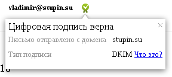

Продолжение заметок Установка и настройка Postfixadmin и Установка и настройка Dovecot. В этой заметке мы настроим MTA и его обвязку. В качестве альтернативы Postfix можно воспользоваться Exim, настройка которого описана тут: Настройка Exim.
Для работы Postfix понадобится поставить следующие пакеты:
# apt-get install postfix postfix-mysql
Выполним базовую настройку Postfix, вписав в файл /etc/postfix/main.cf следующее содержимое:
# Настраиваем имя почтового сервера и его домен по умолчанию myhostname = mail.domain.tld mydomain = domain.tld myorigin = domain.tld mydestination = $myhostname, localhost.$mydomain, localhost # Ожидаем подключения на всех интерфейсах и только по IPv4 inet_protocols = ipv4 inet_interfaces = all # Я не доверяю даже локальным отправителям, поэтому любой, # кто захочет отправить письмо наружу, должен будет пройти аутентификацию mynetworks = # Настройка уведомлений администратора об ошибках notify_classes = resource, software, protocol, policy # Настройка ограничений прав пользователя для транспорта virtual virtual_minimum_uid = 120 virtual_uid_maps = static:120 virtual_gid_maps = static:120 # Настройка использования файла пересылок alias_maps = hash:/etc/aliases alias_database = hash:/etc/aliases local_recipient_maps = $alias_maps # Максимальный размер принимаемого письма message_size_limit = 31457280 # Ограничения на этапе установке подключения smtpd_client_restrictions = # Разрешить клиентов из доверенных сетей permit_mynetworks, # Разрешить клиентов, прошедших аутентификацию permit_sasl_authenticated, # Отклонять клиентов, у которых доменное имя из PTR-записи # не решается в тот же IP по A-записи reject_unknown_client_hostname # Ограничения на этапе команды HELO/EHLO smtpd_helo_restrictions = permit_mynetworks, permit_sasl_authenticated, # Отклонять клиентов, использующих неправильный синтаксис доменного имени в HELO reject_invalid_helo_hostname, # Отклонять клиентов, указывающих в HELO не полное доменное имя reject_non_fqdn_helo_hostname, # Отклонять клиентов, DNS-имя из HELO которых не имеет A- или MX-записи reject_unknown_helo_hostname # Отклонять клиентов, не использовавших команду HELO/EHLO smtpd_helo_required = yes # Ограничения на этапе команды MAIL FROM smtpd_sender_restrictions = # Отклонять почту от отправителей с неполным доменным именем reject_non_fqdn_sender, # Отклонять почту от отправителей из несуществующих доменов reject_unknown_sender_domain, permit_mynetworks, permit_sasl_authenticated # Ограничения на этапе команды RCPT TO smtpd_recipient_restrictions = # Отклонять почту для получателей с неполным доменным именем reject_non_fqdn_recipient, # Отклонять почту для получателей в несуществующем домене reject_unknown_recipient_domain, permit_mynetworks, permit_sasl_authenticated, # Запретить отправлять почту в домены, которые мы не обслуживаем reject_unauth_destination, # Отклонять почту для получателей, которых у нас нет reject_unlisted_recipient
Добавляем пользователя postfix для доступа к базе данных:
USE mysql;
INSERT INTO user(user, password, host) VALUES('postfix', PASSWORD('postfix_password'), 'localhost');
FLUSH PRIVILEGES;
Даём пользователю postfix доступ к таблице ящиков, доменов, псевдонимов, псевдонимов доменов и квот:
USE mysql;
INSERT INTO tables_priv(host, db, user, table_name, table_priv, column_priv) VALUES
('localhost', 'postfixadmin', 'postfix', 'alias', '', 'Select'),
('localhost', 'postfixadmin', 'postfix', 'alias_domain', '', 'Select'),
('localhost', 'postfixadmin', 'postfix', 'mailbox', '', 'Select'),
('localhost', 'postfixadmin', 'postfix', 'domain', '', 'Select'),
('localhost', 'postfixadmin', 'postfix', 'quota2', '', 'Select');
INSERT INTO columns_priv(host, db, user, table_name, column_name, column_priv) VALUES
('localhost', 'postfixadmin', 'postfix', 'alias', 'goto', 'Select'),
('localhost', 'postfixadmin', 'postfix', 'alias', 'address', 'Select'),
('localhost', 'postfixadmin', 'postfix', 'alias', 'active', 'Select');
INSERT INTO columns_priv(host, db, user, table_name, column_name, column_priv) VALUES
('localhost', 'postfixadmin', 'postfix', 'alias_domain', 'target_domain', 'Select'),
('localhost', 'postfixadmin', 'postfix', 'alias_domain', 'alias_domain', 'Select'),
('localhost', 'postfixadmin', 'postfix', 'alias_domain', 'active', 'Select');
INSERT INTO columns_priv(host, db, user, table_name, column_name, column_priv) VALUES
('localhost', 'postfixadmin', 'postfix', 'mailbox', 'maildir', 'Select'),
('localhost', 'postfixadmin', 'postfix', 'mailbox', 'username', 'Select'),
('localhost', 'postfixadmin', 'postfix', 'mailbox', 'active', 'Select'),
('localhost', 'postfixadmin', 'postfix', 'mailbox', 'quota', 'Select');
INSERT INTO columns_priv(host, db, user, table_name, column_name, column_priv) VALUES
('localhost', 'postfixadmin', 'postfix', 'domain', 'domain', 'Select'),
('localhost', 'postfixadmin', 'postfix', 'domain', 'backupmx', 'Select'),
('localhost', 'postfixadmin', 'postfix', 'domain', 'active', 'Select');
INSERT INTO columns_priv(host, db, user, table_name, column_name, column_priv) VALUES
('localhost', 'postfixadmin', 'postfix', 'quota2', 'username', 'Select'),
('localhost', 'postfixadmin', 'postfix', 'quota2', 'bytes', 'Select');
FLUSH PRIVILEGES;
Подготовим файлы SQL-карт, которыми будет пользоваться Postfix для получения различной информации из базы данных. Все файлы карт создаются в каталоге /etc/postfix/sql. Перед созданием файлов создаём каталог:
# mkdir /etc/postfix/sql
Создаём файл /etc/postfix/sql/domains.cf, в котором содержится SQL-запрос для получения списка активных доменов, для которых осуществляется приём почты:
user = postfix
password = postfix_password
hosts = 127.0.0.1
dbname = postfixadmin
query = SELECT domain
FROM domain
WHERE domain = '%s'
AND backupmx = 0
AND active = 1
Создаём файл /etc/postfix/sql/backup_domains.cf, в который поместим SQL-запрос, извлекающий список активных доменов, для которых наш почтовый сервер является резервным:
user = postfix
password = postfix_password
hosts = 127.0.0.1
dbname = postfixadmin
query = SELECT domain
FROM domain
WHERE domain = '%s'
AND backupmx = 1
AND active = 1
Почтовый сервер будет принимать почту для этих доменов, не складывая в какой-либо почтовый ящик, а размещая письма в очереди на отправку. При первой возможности он перешлёт её почтовому серверу, имеющему в DNS запись MX с меньшим числом, то есть - с большим приоритетом. Сервер с самым высоким приоритетом поместит письма в почтовые ящики получателей.
Создаём файл /etc/postfix/sql/alias.cf, содержащим SQL-запрос для извлечения списка активных пересылок:
user = postfix
password = postfix_password
hosts = 127.0.0.1
dbname = postfixadmin
query = SELECT goto
FROM alias
WHERE address = '%s'
AND active = 1
Когда почта направляется на адрес пересылки, Postfix подменит адрес доставки на адрес, указанный в этой таблице. Postfix предпримет несколько попыток замены, до тех пор, пока SQL-запрос не перестанет возвращать результаты или результат ничем не будет отличаться от исходного адреса. Таким образом можно создать цепочку пересылок, однако это не приветствуется, поскольку при этом Postfix будет выполнять больше SQL-запросов к базе данных и таким образом можно случайно зациклить цепочку. Postfix имеет ограничение на максимальную длину цепочки, так что слишком длинные или зацикленные цепочки работать не будут.
По умолчанию Postfixadmin создаёт для каждого почтового ящика пересылку с одноимённым адресом. Сделано это, видимо, для того, чтобы не создать пересылку с именем существующего почтового ящика. На мой взгляд это не слишком хорошее решение.
Создаём файл /etc/postfix/sql/alias_domain.cf, в который поместим SQL-запрос для извлечения активных пересылок доменов:
user = postfix
password = postfix_password
hosts = 127.0.0.1
dbname = postfixadmin
query = SELECT alias.goto
FROM alias_domain
JOIN alias ON alias.address = CONCAT('%u', '@', alias_domain.target_domain)
AND alias.active = 1
WHERE alias_domain.alias_domain = '%d'
AND alias_domain.active = 1
Пересылки для доменов действуют следующим образом: Если в домене получателя есть почтовый ящик или пересылка, локальная часть адреса которого совпадает с локальной частью адреса получателя, то доменная часть адреса получателя подменяется на указанную в пересылке.
Например, если есть доменная пересылка domain.tld → domain.com и на почтовом сервере есть адрес box@domain.com, то при отправке письма на адрес box@domain.tld, его получателем будет адрес box@domain.com. К этому адресу применимы обычные пересылки, то есть реальным получателем этого письма может быть и другой ящик, для которого пересылка создана явным образом, например box@domain.tld → boxer@domain.ru.
Создаём файл /etc/postfix/sql/alias_domain_catchall.cf, который содержит SQL-запрос для пересылок доменов, захватывающих письма для любого ящика в домене:
user = postfix
password = postfix_password
hosts = 127.0.0.1
dbname = postfixadmin
query = SELECT alias.goto
FROM alias_domain
JOIN alias ON alias.address = CONCAT('@', alias_domain.target_domain)
AND alias.active = 1
WHERE alias_domain.alias_domain = '%d'
AND alias_domain.active = 1
Если для получателя не найдена явная пересылка с адреса на адрес и не найдена пересылка из домена в другой домен с такой же локальной частью адреса, то это правило перехватит почту для любого другого ящика в домене и перешлёт её на указанный ящик.
Например, почта направляется в ящик office@domain.tld, есть пересылка из домена domain.tld в домен domain.com, но ящика или пересылки с именем office@domain.com нет, но есть пересылка из домена domain.tld на ящик info@domain.com, то почта для office@domain.tld попадёт в ящик info@domain.com. Довольно сложное объяснение. Проще - такие пересылки захватывают почту для не существующих в домене адресов и перенаправляют её на указанный адрес.
Создаём файл /etc/postfix/sql/mailbox.cf, в который поместим запрос, возвращающий путь к каталогу активного почтового ящика:
user = postfix
password = postfix_password
hosts = 127.0.0.1
dbname = postfixadmin
query = SELECT maildir
FROM mailbox
WHERE username = '%s'
AND active = 1
Создаём файл /etc/postfix/sql/alias_domain_mailbox.cf, в который поместим SQL-запрос для извлечения каталога почтового ящика с пересылкой из другого домена:
user = postfix
password = postfix_password
hosts = 127.0.0.1
dbname = postfixadmin
query = SELECT mailbox.maildir
FROM alias_domain
JOIN mailbox ON mailbox.username = CONCAT('%u', '@', alias_domain.target_domain)
AND mailbox.active = 1
WHERE alias_domain.alias_domain = '%d'
AND alias_domain.active = 1
Смысл этого файла совпадает со смыслом файла /etc/postfix/sql/alias_domain.cf и мне не совсем понятно, для чего нужен этот файл. Возможно для того, чтобы можно было отправлять почту с ящика в другом домене, успешно авторизуясь на SMTP-сервере.
Все предыдущие правила были взяты из документации на Postfixadmin и подвергнуты переписыванию с сохранением смысла, но без попыток критического переосмысления. В целом все эти правила кажутся мне несколько запутанными и, пожалуй, даже избыточными. Но я оставил всё, как есть.
Если вы настраивали Dovecot с поддержкой квот, то понадобится также создать файл /etc/postfix/sql/mailbox_limit.cf для проверки превышения квоты получателем:
user = postfix
password = postfix_password
hosts = 127.0.0.1
dbname = postfixadmin
query = SELECT '452 Mailbox is over quota'
FROM mailbox
JOIN quota2 ON quota2.username = mailbox.username
AND mailbox.quota - quota2.bytes <= 0
WHERE mailbox.username = '%s'
AND mailbox.active = 1
Этого SQL-запроса в Postfixadmin нет, я добавил его сам. Насколько я знаю, существует некий патч к транспорту virtual из Postfix, который добавляет в него поддержку квот. Мы, однако, будем использовать транспорт dovecot, поэтому патчи нам не нужны. Однако, если не добавить в Postfix правила, использующего приведённый выше запрос, то при превышении квоты почтового ящика происходит неприятная ситуация: Postfix письмо принимает, но не может передать его Dovecot, поскольку тот отказывается его принять, ссылаясь на превышение квоты. В результате письмо продолжает болтаться в почтовой очереди Postfix, чего нам не нужно, т.к. потенциальные злоумышленники могут забить сначала квоту почтового ящика, а затем и очередь Postfix. Вместо этого мы добавим в Postfix правило, которое будет сообщать о временной ошибке доставки почты, если соответствующий ящик переполнен. Отправитель же может поступить по собственному усмотрению - повторять периодические попытки отправить письмо.
Код 452 можно заменить кодом 552, который свидетельствует о постоянной ошибке. Почтовый сервер отправителя, получив этот код, не будет предпринимать повторных попыток отправки, а сразу же отправит отправителю письмо с сообщением об ошибке доставки письма. Пожалуй, отдавать этот код более разумно, поскольку почтовый ящик чаще всего переполняется потому, что хозяин перестал им пользоваться. В таком случае ждать, когда хозяин почистит ящик, скорее всего бесполезно. Лучше, чтобы отправитель узнал об этом быстрее и, возможно, связался бы с адресатом каким-то другим способом.
Выставим права доступа к файлам SQL-карт, чтобы потенциальный злоумышленник, получивший локальный доступ к системе, не смог получить список почтовых ящиков:
# cd /etc/postfix # chown -R postfix:postfix sql # chmod u=rwx,g=rx,o= sql # cd sql # chmod u=rw,g=r,o= *
Теперь осталось добавить использование SQL-карт в Postfix. Для этого вписываем в файл /etc/postfix/main.cf следующие строки:
virtual_mailbox_domains = proxy:mysql:/etc/postfix/sql/domains.cf relay_domains = proxy:mysql:/etc/postfix/sql/backup_domains.cf virtual_alias_maps = mysql:/etc/postfix/sql/alias.cf, mysql:/etc/postfix/sql/alias_domain.cf, mysql:/etc/postfix/sql/alias_domain_catchall.cf virtual_mailbox_maps = mysql:/etc/postfix/sql/mailbox.cf, mysql:/etc/postfix/sql/alias_domain_mailbox.cf
Также найдём в файле /etc/postfix/main.cf правило smtpd_recipient_restrictions и добавим проверку квот перед разрешением отправлять почту для наших сетей и аутентифицированных пользователей:
smtpd_recipient_restrictions = reject_non_fqdn_recipient, reject_unknown_recipient_domain, check_recipient_access proxy:mysql:/etc/postfix/sql/mailbox_limit.cf, permit_mynetworks, permit_sasl_authenticated, reject_unauth_destination, reject_unlisted_recipient
Уже в таком виде мы получим Postfix, который сможет принимать почту для получателей в наших доменах. Правда, в таком виде он не умеет пересчитывать использование квот почтовых ящиков в таблице quota2 при получении нового письма. Отправить письмо наружу тоже не получится - он не примет письмо без аутентификации клиента, а механизмы аутентификации ещё не были настроены.
Сейчас мы добавим пересчёт квот при получении нового письма и добавим механизмы аутентификации. В файл /etc/postfix/main.cf нужно добавим настройки для использования Dovecot как LDA и SASL-провайдера:
# Dovecot LDA virtual_transport = dovecot dovecot_destination_recipient_limit = 1 virtual_mailbox_base = /home/vmail # Dovecot SASL smtpd_sasl_type = dovecot smtpd_sasl_path = private/auth smtpd_sasl_auth_enable = yes
Если Postfix получит письмо для получателя, настроенного через параметры virtual_*, он попытается воспользоваться транспортом virtual, для того чтобы поместить письмо в ящик получателя. Вместо LDA virtual, имеющимся в составе Postfix, мы будем использоваться LDA, имеющимся в составе Dovecot. Он умеет пересчитывать квоты в таблице quota2.
Для SMTP-аутентификации клиентов будет использоваться SASL-сервис из состава Dovecot. Если вы пропустили настройку этого сервиса Dovecot, стоит заглянуть в описание настройки Dovecot и настроить его сейчас.
Осталось вписать в файл /etc/postfix/master.cf агент локальной доставки (LDA) Dovecot:
dovecot unix - n n - - pipe
flags=DRhu user=vmail:vmail argv=/usr/lib/dovecot/deliver -f ${sender} -d ${recipient}
Теперь можно запустить MTA:
# /etc/init.d/postfix restart
Если есть подозрение, что учтённое использование квоты не соответствует действительности, можно пересчитать использование квот для всех ящиков при помощи следующей команды:
# doveadm quota recalc -A
Настраиваем шифрование с использованием ранее подготовленных SSL-сертификатов. Для этого добавим в файл /etc/postfix/main.cf следующие настройки:
# Настройка SMTP-сервера, принимающего почту smtpd_use_tls = yes smtpd_tls_key_file = /etc/ssl/mail_private.pem smtpd_tls_cert_file = /etc/ssl/mail_public.pem smtpd_tls_CApath = /etc/ssl/certs smtpd_tls_loglevel = 2 smtpd_tls_received_header = yes # Настройка SMTP-клиента, отправляющего почту smtp_tls_loglevel = 2 smtp_tls_CApath = /etc/ssl/certs
Демоны, входящие в состав Postfix, периодически перезапускаются. Это касается и демонов smtp и smtpd. Пока они работают, каждый из них поддерживает в своей памяти сеансовые ключи для всех серверов или клиентов, с которыми были установлены защищённые соединения.
Вычисление сеансового ключа - ресурсоёмкая операция и она будет выполняться при перезапуске каждого демона для каждого сервера или клиента, с которым взаимодействует Postifx. Это не страшно для небольших почтовых систем, но для систем, взаимодействующих с большим количеством других серверов и клиентов, это может оказаться критичным.
Чтобы ключи хранились в кэше и не пересчитывались каждый раз, можно включить использование менеджера сеансовых ключей tlsmgr, входящего в состав Postfix. Для этого впишем в файл /etc/postfix/main.cf файл, в котором размещаются сеансовые ключи и зададим время кэширования:
smtpd_tls_session_cache_database = sdbm:/var/lib/postfix/tlsmgr_smtpd.db smtpd_tls_session_cache_timeout = 3600s smtp_tls_session_cache_database = sdbm:/var/lib/postfix/tlsmgr_smtp.db smtp_tls_session_cache_timeout = 3600s
Стоит отметить, что каталог с сеансовыми ключами стоит размещать вне chroot-окружения Postfix, поскольку потенциальный злоумышленник, взломавший демона, работающего в chroot-окружении, сможет подменить файлы кэша, получив таким образом возможность, например, принять почту от не аутентифицированного отправителя.
Как уже было сказано, процессы Postfix периодически перезапускаются. При каждом перезапуске каждый процесс устанавливает собственное подключение к базе данных. Чтобы уменьшить одновременное количество подключений к базе данных и снизить частоту переподключений, можно настроить специальный прокси-сервер. Он будет принимать соединения от демонов Postfix и выполнять запросы, пользуясь небольшим количество постоянных подключений к базе данных.
Для настройки использования прокси нужно в файле /etc/postfix/main.cf перед каждой используемой картой mysql указать через двоеточие текст proxy:
virtual_mailbox_domains = proxy:proxy:mysql:/etc/postfix/sql/domains.cf relay_domains = proxy:proxy:mysql:/etc/postfix/sql/backup_domains.cf virtual_alias_maps = proxy:mysql:/etc/postfix/sql/alias.cf, proxy:mysql:/etc/postfix/sql/alias_domain.cf, proxy:mysql:/etc/postfix/sql/alias_domain_catchall.cf virtual_mailbox_maps = proxy:mysql:/etc/postfix/sql/mailbox.cf, proxy:mysql:/etc/postfix/sql/alias_domain_mailbox.cf ... smtpd_recipient_restrictions = check_recipient_access proxy:mysql:/etc/postfix/sql/mailbox_limit.cf,
Также следует указать демону-прокси список обслуживаемых им карт, чтобы он прочитал их до перехода в chroot-окружение. Для этого добавим в файл /etc/postfix/main.cf следующие опции:
proxy_read_maps = proxy:mysql:/etc/postfix/sql/domains.cf, proxy:mysql:/etc/postfix/sql/backup_domains.cf, proxy:mysql:/etc/postfix/sql/alias_domain.cf, proxy:mysql:/etc/postfix/sql/alias_domain_mailbox.cf, proxy:mysql:/etc/postfix/sql/alias_domain_catchall.cf, proxy:mysql:/etc/postfix/sql/alias.cf, proxy:mysql:/etc/postfix/sql/mailbox.cf, proxy:mysql:/etc/postfix/sql/mailbox_limit.cf
Осталось перезапустить Postfix, чтобы настройки вступили в силу:
# /etc/init.d/postfix restart
На мой взгляд, защита от вирусов является обязательным компонентом почтовой системы. Отсутствие проверки на вирусы говорит о низкой квалификации системного администратора. Наиболее доступным, простым в настройке и ставшим стандартом де-факто для проверки почты в мире юникс-систем, считается антивирус ClamAV, который мы и настроим.
Устанавливаем демон ClamAV для проверки файлов на вирусы и демон ClamAV-Milter, работающий по протоколу Milter и предназначенный специально для проверки на наличие вирусов писем:
# apt-get install clamav-milter clamav-daemon
Сразу же обновляем антивирусную базу:
# freshclam
Настройка для демона ClamAV не требуется. Настроим ClamAV-Milter - нужно указать такое расположение Milter-сокета, которое было бы доступно для почтовой системы внутри chroot-окружения в каталоге /var/spool/postfix. Я указал в файле /etc/clamav/clamav-milter.conf такую строчку:
MilterSocket /var/spool/postfix/clamav-milter
Теперь настроим Postfix на использование этого сокет-файла. Для этого в файле /etc/postfix/main.cf укажем в списке Milter-фильтров настроенный сокет:
milter_default_action = accept milter_protocol = 2 smtpd_milters = unix:/clamav-milter non_smtpd_milters = unix:/clamav-milter
Перезапустим ClamAV-Milter и Postfix, чтобы настройки вступили в силу:
# /etc/init.d/clamav-milter restart # /etc/init.d/postfix restart
Осталось проверить, что антивирусная система используется. Для этого создадим специально предназначенный для таких целей тестовый файл EICAR:
$ echo -n 'X5O!P%@AP[4\PZX54(P^)7CC)7}$EICAR-STANDARD-ANTIVIRUS-TEST-FILE!$H+H*' > eicar.txt
И попробуем его отправить во вложении с какого-нибудь почтового ящика почтовой системы на тот же ящик. Если письмо не пришло, значит антивирусная система работает. Для полной уверенности можно ещё заглянуть в журнал почтовой системы /var/log/mail.log, где должна появиться строчка вида:
Dec 29 17:04:46 mail postfix/cleanup[2035]: 770B685287: milter-hold: END-OF-MESSAGE from localhost[127.0.0.1]: milter triggers HOLD action; from=<box@domain.tld> to=<box@domain.tld> proto=ESMTP helo=<computer.domain.tld>
Чтобы выяснить, какой конкретно вирус был обнаружен, можно обратиться к журналу демона ClamAV в файле /var/log/clamav/clamav.log, где должна быть запись, относящаяся примерно к тому же времени и содержащая текст следующего вида:
Sun Dec 29 17:04:46 2013 -> fd[10]: Eicar-Test-Signature(4017e0393a0297fc376f7be69ad6a1b0:881) FOUND
DKIM - DomainKeys Identified Mail - это цифровая подпись, которую почтовый сервер добавляет к письмам от отправителей из обслуживаемых им доменов. Для этого сервер использует секретную часть ключа, которая известна только ему. Получатель может проверить подпись письма при помощи публичной части ключа, доступной через DNS-запись домена отправителя.
Нужно понимать, что DKIM не защищает от подделки отправителя и не может являться гарантией того, что письмо является полезным и безопасным, т.е. не содержит спама и вирусов. DKIM лишь удостоверяет, что почтовый сервер уполномочен владельцем домена на обслуживание почты, исходящей из этого домена. Спамеры вполне могут приобрести домен, настроить DNS и почтовый сервер для отправки писем с DKIM-подписью. Однако это требует финансовых затрат, а источник спама при этом легко идентифицировать и заблокировать. Спамеры же стараются зарабатывать деньги, оставаясь анонимными. Поэтому письмо, имеющее правильную DKIM-подпись, можно с высокой степенью достоверности считать полезным и безопасным.
Добавление DKIM-подписей к письмам позволяет повысить доверие других почтовых систем к нашим письмам. Проверка DKIM-подписей - это отдельная тема, связанная с фильтрацией писем после их приёма. Перед настройкой DKIM стоит воспользоваться другими средства для повышения доверия к почте от нашего сервера, которые проще в настройке и чаще используются, - это настройка PTR- и SPF-записей:
SFP-запись - это TXT-запись следующего вида:
domain.tld. IN TXT "v=spf1 +mx ~all"
Если указанный домен обслуживается одним почтовым сервером, этой записи достаточно. В более сложных случаях следует обратиться к документу проекта Sender Policy Framework, описывающему синтаксис SFP-записи - SPF Record Syntax. Стоит также прочесть о наиболее частых ошибках, допускаемых при создании SFP-записи - Common mistakes.
Приступим к настройке OpenDKIM для добавления подписей к почте из наших доменов. Настройка производится в соответствии со статьёй OpenDKIM + Postfix = просто с небольшими отличиями - я использую сокет-файл.
Устанавливаем OpenDKIM:
# apt-get install opendkim opendkim-tools
Готовим каталог для DKIM-ключей:
# mkdir /etc/postfix/dkim/ # cd /etc/postfix/dkim/
Генерируем ключи для домена domain.tld:
# opendkim-genkey -D /etc/postfix/dkim/ -d domain.tld -s mail # mv mail.private mail.domain.tld.private # mv mail.txt mail.domain.tld.txt
Далее можно сгенерировать ключи для других доменов, обслуживаемых нашей почтовой системой.
Создаём таблицы ключей для каждого из доменов в файле /etc/postfix/dkim/keytable:
mail._domainkey.domain.tld domain.tld:mail:/etc/postfix/dkim/mail.domain.tld.private
Создаём в файле /etc/postfix/dkim/signingtable таблицу, задающую ключи для доменов. В конце файла можно указать ключ для подписи писем из тех доменов, для которых ключ не указан явным образом:
domain.tld mail._domainkey.domain.tld * mail._domainkey.stupin.su
Меняем группу и права доступа к файлам:
# cd /etc/postfix/dkim/ # chown root:opendkim * # chmod u=rw,g=r,o= *
В файле /etc/opendkim.conf прописываем следующую конфигурацию:
# Настройки журналирования и отладки Syslog yes SyslogSuccess yes LogWhy yes X-Header yes # Меняем для того, чтобы Postfix мог писать в сокет UMask 000 Canonicalization relaxed/relaxed # Sign и Verify - подписывать и проверять подпись Mode sv KeyTable file:/etc/postfix/dkim/keytable SigningTable file:/etc/postfix/dkim/signingtable OversignHeaders From
Сокет, создаваемый OpenDKIM, должен быть доступен внутри chroot-окружения Postfix, внутри /var/spool/postfix/. Однако этот каталог принадлежит Postfix и поэтому пользователь opendkim не сможет создать в нём сокет-файл. Чтобы обойти это ограничение мы самостоятельно создадим внутри chroot-окружения каталог, к которому будет иметь доступ пользователь opendkim:
# mkdir /var/spool/postfix/opendkim # chown opendkim:opendkim /var/spool/postfix/opendkim
В файле /etc/defaults/opendkim прописываем настройки сокета, который будет использоваться Postfix'ом:
SOCKET="local:/var/spool/postfix/opendkim/socket"
Содержимое файла /etc/postfix/dkim/mail.domain.tld.txt и файлов для других доменов в соответствующие зоны DNS.
В файл конфигурации Postfix /etc/postfix/main.cf, в настройки smtpd_milters и non_smtpd_milters добавляем новый сокет-файл:
milter_default_action = accept milter_protocol = 2 smtpd_milters = unix:/clamav-milter, unix:/opendkim/socket non_smtpd_milters = unix:/clamav-milter, unix:/opendkim/socket
Этот сокет-файл должен быть указан в конце списка, чтобы OpenDKIM подписывал уже готовое письмо, в которое больше не будет добавляться дополнительных заголовков.
Курсивом отмечен Unix-сокет ClamAV-Milter, который был настроен в предыдущем разделе. Если вы не настраивали его, здесь их тоже не будет. Для настройки OpenDKIM достаточно лишь добавить Unix-сокеты, отмеченные жирным шрифтом.
Осталось перезапустить демонов OpenDKIM и Postfix, чтобы настройки вступили в силу:
# /etc/init.d/opendkim restart # /etc/init.d/postfix restart
Всё готово, можно проверять. Попробовал отправить тестовое письмо на почтовый ящик в Yandex-почте, в почтовом ящике при открытии этого письма увидел следующую картинку:
Фильтрация спама - это большая и сложная тема, в которой нет универсальных решений. Существующие средства для защиты от спама можно поделить на проактивные, позволяющие защититься от подозрительных писем до их приёма, и обычные, работающие с уже принятыми письмами.
Частично мы уже настроили проактивную фильтрацию на этапе настройки Postfix. Он проверяет правильность имени почтовой системы, которым она представляется в команде HELO/EHLO, проверяет существование домена отправителя и домена получателя. Рассмотрим другие средства:
Встречная проверка отправителя. Почтовый сервер получателя пытается инициировать отправку письма на адрес отправителя. Результат проверки становится ясным до отправки тела письма, в этот момент почтовый сервер завершает сеанс и использует результат проверки для того, чтобы принять или отклонить письмо. Для проверки используется пустой адрес отправителя.
Программы для рассылки спама обычно не готовы к прохождению такой проверки, поэтому такой способ проверки может помочь защититься от спама. Однако такая проверка может вызывать проблемы, если два сервера проверяют наличие отправителей друг на друге, но при этом один из них откажется принять почту на пустой адрес. Также могут возникнуть проблемы при использовании этого метода, когда на другом сервере настроен грейлистинг. Сервер с грейлистингом может сообщить о временной ошибке, так что сервер со встречной проверкой не сможет проверить существование адреса отправителя.
Грейлистинг или серые списки - сервер получателя запоминает триплет с IP-адресом отправителя, адресом отправителя и адресом получателя, а затем сообщает о временной ошибке. Почтовый сервер, соответствующий стандартам, попытается повторить отправку сообщения через некоторое время. Если обе попытки не следуют друг за другом, а происходят спустя некоторый минимальный интервал времени, и если совпал весь триплет, то письмо принимается.
Программы рассылки спама обычно не предпринимают повторных попыток отправки, поэтому такая проверка позволяет отсеять часть подозрительной почты. В то же время у такого метода существуют недостатки - почта приходит с задержкой. Для того, чтобы нивелировать этот недостаток, триплет, прошедший проверку, запоминается на некоторое длительное время, в течение которого приём последующих писем происходит без задержки. Если несколько писем с одного и того же IP-адреса, но с разными адресами отправителей и получателей, прошли проверку, то почта с этого IP-адреса тоже может некоторое время приниматься без проверок.
Однако, есть ещё одна сложность - некоторые большие почтовые системы могут каждый раз пытаться отправить письмо с другого IP-адреса. Для обхода подобных ситуаций вместо IP-адреса запоминаются только первых три октета IP-адреса, так что если IP-адрес отправителя находится в той же сети, то письма могут дойти. Более крупные сети обычно добавляются вручную в белый список IP-адресов, почта с которых принимается сразу.
Обычная фильтрация спама происходит уже после приёма письма. Обычно для оценки степени доверия к письму применяются Байесовские фильтры. Они выставляют оценку, основываясь на большом количестве различных признаков, характерных для спама или полезной почты. Например, соответствие заголовков письма SPF-записи в домене отправителя и наличие правильной DKIM-подписи свидетельствует о полезности письма. Их отсутствие, наличие в письме ключевых слов, приёмов оформления HTML-писем, характерных для спама, свидетельствует о том, что письмо бесполезное.
Мой опыт показывает, что обычная фильтрация писем оказывается очень ресурсоёмкой, поэтому я избегаю её использования. Тарпиттинг и встречная проверка отправителя могут вызывать трудно диагностируемые проблемы. Из средств проактивной фильтрации я предпочитаю использовать SPF, чёрные и белые списки совместно грейлистингом. Эти средства предоставляют достаточно хорошую защиту от спама и используют минимум ресурсов, а возникающие с ними проблемы легко поддаются диагностике.
Лучшим из найденных мной в дистрибутиве Debian демонов для грейлистинга оказался демон milter-greylist. Перечислю несколько причин, почему он показался мне лучшим:
Устанавливаем пакет с демоном грейлистинга:
# apt-get install milter-greylist
Открываем файл конфигурации /etc/milter-greylist/greylist.conf и заменяем строчки, настраивающие сокет:
socket "/var/spool/postfix/milter-greylist" 666
Процедуру фильтрации грейлистинга будем применять только в одном из двух случаев:
Встречаются администраторы, которые бездумно вписывают все найденные чёрные списки в конфигурацию своего почтового сервера. Я не хочу создавать непробиваемую стену для тех, кто готов работать в соответствии со стандартами и приложить немного дополнительных усилий для отправки почты.
Во втором случае я исхожу из следующей простой логики: это общепринятые адреса, поэтому спамеры могут слать на них письма «вслепую», точно не зная, существует ли вообще такой ящик.
Изменим список своих сетей:
list "my network" addr { 127.0.0.1/8 }
Для примера, создадим список IP-адресов своего провайдера. Несмотря на то, что эти IP-адреса могут числиться в списке PBL на spamhaus.org, мы их поместим в белый список:
list "ufanet network" addr { \
192.168.0.0/16 \
172.16.0.0/12 \
10.0.0.0/8 \
46.191.128.0/17 \
81.30.176.0/20 \
81.30.192.0/19 \
89.189.128.0/19 \
77.79.128.0/18 \
79.140.16.0/20 \
92.50.128.0/18 \
94.41.0.0/16 \
95.105.0.0/17 \
136.169.128.0/17 \
145.255.0.0/19 \
}
Стоит отметить, что в многострочных правилах после каждой строки, имеющей продолжение, должен стоять символ обратной косой черты.
Заменим получателей, для которых всегда будет применяться грейлистинг:
list "grey users" rcpt { \
postmaster@domain.tld \
webmaster@domain.tld \
hostmaster@domain.tld \
abuse@domain.tld \
info@domain.tld \
}
Добавляем правило для чёрного списка zen.spamhaus.org:
dnsrbl "ZEN" zen.spamhaus.org 127.0.0.0/28
И, наконец, сводим все настройки в конечный список контроля доступа (ACL):
racl whitelist list "my network" racl whitelist list "my friends" racl whitelist list "broken mta" racl whitelist list "ufanet network" racl greylist dnsrbl "ZEN" delay 10m autowhite 3d racl greylist list "grey users" delay 10m autowhite 3d racl whitelist default
В файле /etc/default/milter-greylist включаем демон milter-greylist и опять настраиваем сокет:
ENABLED=1 SOCKET="/var/spool/postfix/milter-greylist"
В файле /etc/postfix/main.cf добавляем использование milter-greylist в начало настройки smtpd_milters:
smtpd_milters = unix:/milter-greylist, unix:/clamav-milter, unix:/opendkim/socket
Осталось перезапустить демоны:
# /etc/init.d/milter-greylist start # /etc/init.d/postfix restart
Фильтрация спама - очень щепетильная тема. Многие администраторы люто негодуют, когда слышат слова "грейлистинг" и "спамхаус". Спорным можно считать и то, что грейлистингу в описанной конфигурации всегда подвергается адрес postmaster, почта которому должна доходить всегда, в том числе для решения проблем с её непрохождением. Я считаю, что показанная здесь конфигурация грейлистинга достаточно либеральна, в том числе потому, что пресловутый спамхаус не используется для безоговорочного отклонения всех писем подряд. Однако, я буду рад услышать ваши доводы.
Примечание от 13 марта 2013 года: Немного поменял порядок проверок в правилах smtpd_*_restrictions.
Продолжение следует...